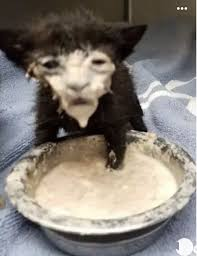
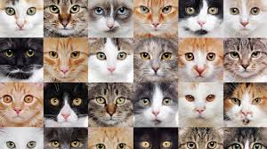
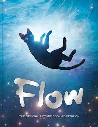

Gatos abandonados: uma realidade silenciosa que cresce a cada ano
- Abandono em alta: Número de gatos nas ruas segue crescendo.
- Abrigos lotados: ONGs enfrentam superlotação constante.
- Adoção consciente: Informação e castração fazem a diferença.







Material promocional revela detalhes importantes do filme.

A produção conquista crítica e público ao levar a estatueta mais disputada do cinema.